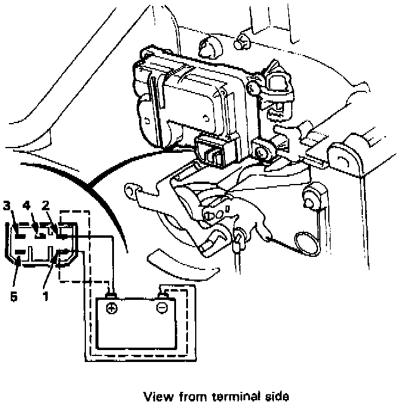

Component Test

1. Measure the resistance between the No. 3 and 5 terminals.
Resistance: 4 K Ohms
2. Check the motor operation by briefly connecting the battery (12 V) positive to the No. 2 terminal and negative to the No. 1 terminal.
3. Reverse the wires to be sure the motor will run in both directions.
CAUTION: Be sure to disconnect the battery from the motor as soon as the motor has started. Failure to do so will damage motor.
4. Connect a battery (12 V) to the motor (positive to No. 2 and negative to No. 1), and measure the resistance between the terminals No. 4 and No. 5.
Resistance should be approximately 1.2 K Ohms at COOL and 4.0 K Ohms at HOT. Also check the resistances with the battery polarity reversed.